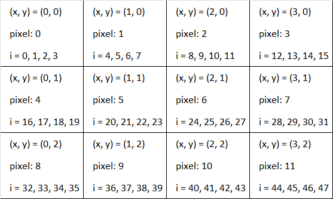

This is my project started on 2018-11-05.
The steps I'm using are as follows:
The src can come from a lot of places but if it comes from anywhere outside the server, or from a data url, we cannot use getImageData() to extract imgData object once it is on the canvas because the default is for browsers to not allow CORS
var c, ctx;
c = document.getElementById('myCanvas');
ctx = c.getContext('2d');
The container element is only a container for graphics. But the getContext() method returns an object that we can use to draw on the canvas
var img = document.getElementById('myImage');
c.width = img.width; // make sure the canvas has the same size as the image
c.height = img.height;
ctx.drawImage(img, 0, 0);
var x = document.createElement('img');
x.src = 'some src'; // this could even be a data url
c.width = x.width;
c.height = x.height;
ctx.drawImage(x, 0, 0);
Using the canvas is the only way to make the image data object, and that's the only way to modify pixels in javascript
In every program, it all starts with using drawImage() to copy an image (like from the img tag or data url) onto a canvas, from which we can get the pixel data
var imgData = ctx.getImageData(0, 0, c.width, c.height);
An image data object has 3 properties:
ImageData {data: Uint8ClampedArray(1470000), width: 700, height: 525}
The length of data will be 4*w*h which makes sense because there will be w*h pixels and each pixel will have a red, green, blue and alpha value
ctx.putImageData(imgData, 0, 0);
If you have access to the context, you can create a blank object and copy the data in 2 steps.
var x = ctx.createImageData(imgData); // this creates a new object with the same dimensions but does not itself copy the data
x.data.set(imgData.data);
function copyImageData(inputImageData) {
var x = document.createElement('canvas');
x.width = inputImageData.width;
x.height = inputImageData.height;
var y = x.getContext('2d');
y.putImageData(inputImageData, 0, 0);
var outputImageData = y.getImageData(0, 0, inputImageData.width, inputImageData.height);
return outputImageData;
}
var x = new Uint8ClampedArray(originalImageData.data);
var x = originalImageData; // console.log(x);
It all starts with the imgData object.
One of its properties is imgData.data, which looks like an Array but is actually an ArrayBuffer object.
The imgData.data ArrayBuffer stores the image's data in the following way: imgData.data = [r0, g0, b0, a0, r1, g1, b1, a1, r2, g2, b2, a2, ......, an]. In this case, each element holds an 8-bit integer. So it's just a sequence of 8 0s and 1s.
It can get confusing trying to figure out which element belongs to which pixel, so we might want to use the Uint32Array.
We can convert the imgData.data ArrayBuffer into a Uint32Array like this: const p32 = new Uint32Array(imgData.data.buffer);
The line imgData.data.buffer returns the source ArrayBuffer on which imgData.data was created. And using this, we can view the data in perhaps a more amenable way. A Uint32Array is a typed array, where each element is a 32-bit integer. The 'U' stands for unsigned, which means that there is no +ve or -ve. If if was signed, that would mean the first bit would denote +ve (0) or -ve(1).
The Uint32Array stores its elements as 32bit integers. But the bytes are read backwards. So in the above example, the elements from imgData.data = [r0, g0, b0, a0, ...] would become p32 = [pixel0, ...] where pixel0 stores r0, g0, b0, a0 - but it does it backwards, so the number is actually ABGR, or a0+b0+g0+r0, where each a0, b0 etc, are 8bits. So pixel0 is a 32-bit sequence integer
These are pixels where a=0.
That's about it. You might have a pixel like (0, 0, 0, 0) that will display white because its background is white and the pixel itself is transparent. It's worth noting these kinds of pixels because in many functions, you may want to keep the initial pixel's alpha value. This also has implications for operations on a pixel that use the values of its neighbors, like blurring.Here is a simple function to invert the colors of the image data object.
function applyInversion(inputImageData) {
var outputImageData = copyImageData(inputImageData);
for (var i = 0; i < inputImageData.data.length; i+=4) {
outputImageData.data[i+0] = 255-inputImageData.data[i+0];
outputImageData.data[i+1] = 255-inputImageData.data[i+1];
outputImageData.data[i+2] = 255-inputImageData.data[i+2];
outputImageData.data[i+3] = inputImageData.data[i+3];
}
return outputImageData;
}
var x = c.toDataURL('image/jpeg');
var a = document.createElement('a');
a.href = x;
a.download = 'new.jpg';
a.click();
a.remove();